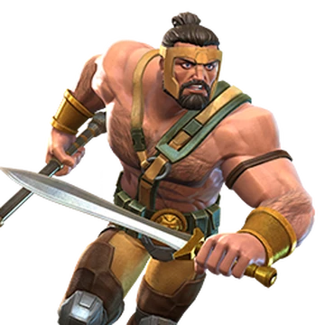
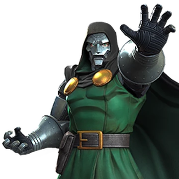
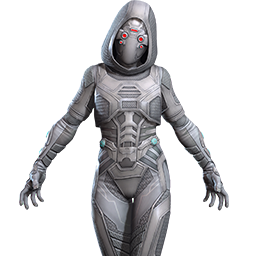
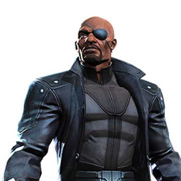
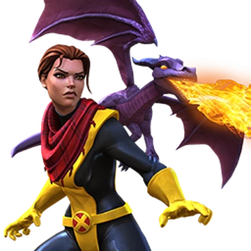
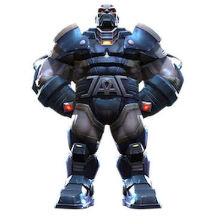
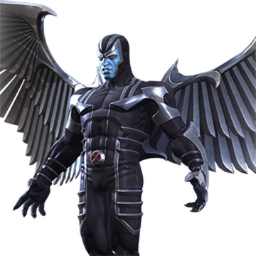

Marvel Contest of Champions - Most Powerful Characters
1. Hercules
Hercules is arguably the most powerful champion in MCOC due to his sheer versatility and damage output. His abilities revolve around building Feats of Strength, which enhance his attack power and utility over the course of a fight. Hercules shines in extended battles, especially when paired with his immortality mechanic, which allows him to survive with 1 HP for a limited time. This makes him invaluable in difficult content like Abyss of Legends and Labyrinth of Legends, where sustainability and damage are crucial.
Class: Cosmic
- Strengths:
- Immortality mechanic allows him to survive with 1 HP for a limited time.
- High burst damage and sustainability with Feats of Strength.
- Excellent for long fights due to ramp-up abilities.
- Immunity to stun while striking with his heavy attack.
- Weaknesses:
- Requires skill to keep his combo meter high for optimal damage.
- Ramp-up can take time in shorter fights.
2. Doctor Doom
Doctor Doom stands out as one of the best Mystic champions, known for his ability to nullify buffs, inflict power control, and deal significant burst damage with his Doom Cycle. His unique ability to block unblockable attacks and counter champions reliant on buffs makes him a counter to many challenging matchups. Additionally, his tanky stats and passive shock immunity make him a reliable choice in Alliance War Defense and questing.
Class: Mystic
- Strengths:
- Nullifies buffs effectively, countering buff-heavy champions.
- Power control capabilities with his Doom Cycle.
- High survivability due to tanky stats and passive shock immunity.
- Blocks unblockable attacks, increasing utility in difficult content.
- Weaknesses:
- Medium damage output compared to other top-tier attackers.
- Requires precise timing to maximize the Doom Cycle.
3. Ghost
Ghost is a fan-favorite for her unmatched utility and damage potential when played skillfully. She thrives on her ability to phase through attacks, gaining power and damage boosts while phasing. Her synergies, especially with Wasp and Hood, further elevate her gameplay, allowing her to ignore critical game mechanics like damage over time. Ghost’s playstyle requires practice, but when mastered, she becomes an unstoppable force capable of clearing content with ease.
Class: Tech
- Strengths:
- Phasing mechanic allows her to avoid damage and convert debuffs into power boosts.
- High damage potential with critical hits and heavy attack rotations.
- Synergies with Hood and Wasp provide debuff immunity and unblockable specials.
- Extremely versatile and effective in most game modes.
- Weaknesses:
- Steep learning curve to master phasing mechanics.
- Relies on synergies to reach full potential.
4. Nick Fury
Nick Fury brings unparalleled offensive power to the battlefield. Starting as a strong champion, he becomes nearly unstoppable when his Life Model Decoy is destroyed, entering his real Fury phase. In this state, he gains permanent Fury buffs, dramatically increasing his damage output. His synergy with other champions also makes him a cornerstone for many teams, boosting their critical damage and utility.
Class: Skill
- Strengths:
- Incredible damage output in his real Fury phase after the Life Model Decoy is destroyed.
- High bleed damage from basic attacks and special attacks.
- Synergies provide significant boosts to other champions.
- Evade counter and shrugging off debuffs enhance utility.
- Weaknesses:
- Must sacrifice 30% of health to unlock his real Fury phase.
- Limited sustainability due to reliance on Life Model Decoy.
5. Kitty Pryde
Kitty Pryde is another champion who excels at avoiding damage through phasing mechanics. Her ability to convert debuffs into prowess effects and phase through special attacks makes her a top-tier option for players tackling challenging content. Kitty’s synergy with Tigra and other mutants enhances her prowess gain, enabling her to deal devastating special attack damage.
Class: Mutant
- Strengths:
- Phases through attacks, avoiding damage and triggering additional effects.
- Converts debuffs into prowess, boosting special attack damage significantly.
- Synergizes well with other mutant champions, especially Tigra.
- Immune to damage from many damage-over-time effects while phasing.
- Weaknesses:
- Requires precise timing for phasing and maximizing damage.
- Must build up prowess stacks for optimal damage output.
6. Apocalypse
Apocalypse is an iconic mutant who can change the course of any battle. He can enhance other mutants by activating his Horseman of Apocalypse buffs, dramatically improving their abilities. Apocalypse also excels at debuffing enemies and can inflict multiple debilitating effects like Bleed, Poison, and Degen. His synergies with mutants and his transformation into a Horseman make him an indispensable asset in many team compositions.
Class: Mutant
- Strengths:
- Can provide the Horseman of Apocalypse buffs to other mutants, boosting their power.
- Impressive debuffing ability, including Bleed, Poison, and Degen.
- Weaknesses:
- Requires ramp-up to fully unlock his potential in longer fights.
- Doesn't shine as brightly without mutant synergies or Horseman buffs.
7. Archangel
Archangel is a powerhouse when it comes to applying debuffs, especially his Neurotoxin. His ability to inflict bleed and poison effects, combined with his ability to apply Neurotoxin to the opponent, makes him a top-tier option in several game modes. Archangel also has strong synergy with other mutants, allowing him to deal with a wide range of opponents effectively.
Class: Mutant
- Strengths:
- Applies Neurotoxin to reduce enemy abilities and control power.
- Can inflict bleed and poison, dealing additional damage over time.
- Excellent synergy with mutant champions.
- Weaknesses:
- Needs a ramp-up period to become fully effective in long fights.
- Not as versatile in content requiring quick burst damage.